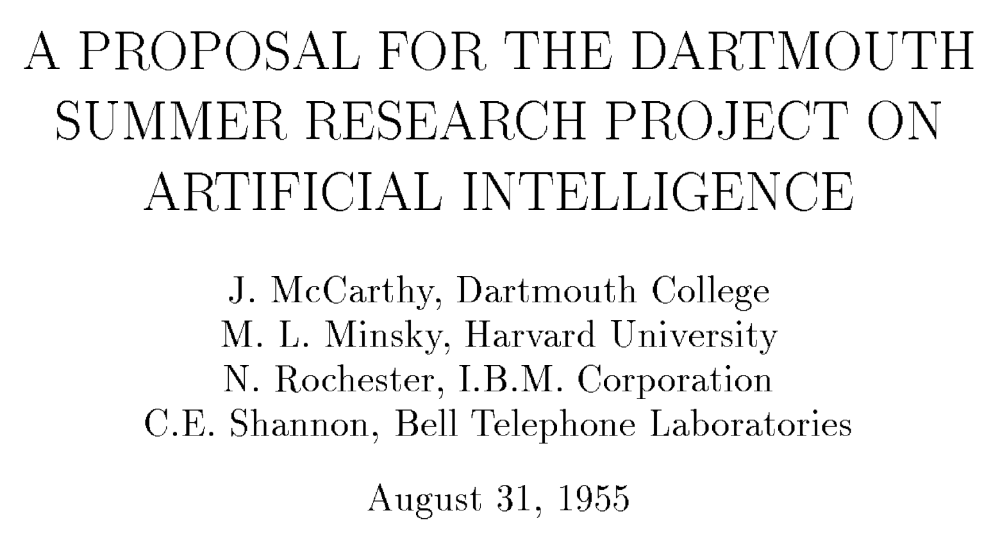
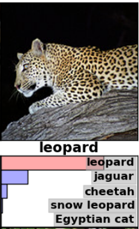

2026학년도 2학기 실전웹서비스개발
실전 웹서비스개발 – 9주차
인공지능의 발전과 AI 활용 소프트웨어 개발
LECTURE 09
01
인공지능의 출발
1950~1970년대 · 지능의 정의와 규칙 기반 추론 · 초기 신경망
인공지능
인간의 지능적 과제를 기계로 수행하려는 연구 분야
- 지능적 과제 - 상황에 맞는 인식과 판단
- 인식·언어 이해·문제 해결을 기계로 수행하려는 연구
- 표현이나 상황이 달라져도 적절한 결과를 만드는 것이 목표
- 과제의 표현 - 입력과 판단 기준의 설정
- 입력에서 무엇을 파악하고 어떤 결과를 만들지 정의
- 숫자 비교와 문의 의도 파악은 서로 다른 처리 방식이 필요
| 과제 | 입력 | 필요한 처리 |
|---|---|---|
| 정해진 수 비교 | 10 > 5 | 주어진 연산 규칙 적용 |
| 문의 의도 파악 | “배송은 언제 오나요?” “택배 도착일을 알려주세요” | 서로 다른 표현에서 같은 의도 파악 |
튜링 테스트
대화에서 관찰되는 행동으로 기계의 지능을 평가하는 관점
- 모방 게임 - 문자 대화로 관찰하는 행동
- 1950년 튜링이 제시한 기계 지능의 평가 관점
- 상대의 정체를 가린 상태에서 질문과 응답으로 판별
- 평가 범위 - 관찰한 대화에서의 구별 가능성
- 추상적인 지능의 질문을 관찰 가능한 행동으로 구체화
- 사람 같은 응답만으로 의식이나 모든 과제의 능력을 증명할 수 없음
| 참여자·기준 | 역할과 관찰 대상 |
|---|---|
| 질문자 | 상대의 정체를 모르는 상태에서 문자로 질문 |
| 응답자 A · 사람 | 질문에 문자로 응답 |
| 응답자 B · 기계 | 같은 대화 조건에서 문자로 응답 |
| 판별 기준 | 문자 응답으로 사람과 기계를 구별할 수 있는지 관찰 |
다트머스 연구 모임
지능의 구현을 공동의 연구 과제로 정립한 출발점
- 공동 연구 의제 - 지능을 기계로 구현하는 목표
- 학습과 지능의 특징을 기계로 모사할 가능성 탐구
- 여러 구현 접근을 함께 연구할 분야의 출발점 마련
- 제안과 모임 - 구분되는 두 시점
- 1955년 연구 제안서를 바탕으로 1956년 여름 모임 개최
- 완성 기술의 공개보다 연구 목표와 문제의 공유에 의미

-
1955년
연구 목표 제안
-
1956년 여름
다트머스 연구 모임
기호 기반 인공지능
지식을 기호와 규칙으로 표현해 결론을 도출하는 접근
- 기호 표현 - 대상과 관계를 명시한 지식
- 알려진 사실을 기계가 다룰 수 있는 기호로 표현
- 조건과 결론의 관계를 사람이 규칙으로 작성
- 규칙 적용 - 사실에서 결론을 얻는 과정
- 현재 사실에 맞는 규칙을 찾아 새로운 결론 도출
- 판단에 사용한 사실과 규칙을 따라 결과 추적 가능
-
사실
A는 선분 3개로 둘러싸인 평면 도형
-
규칙
변 3개인 다각형 → 삼각형
-
결론
A는 삼각형
퍼셉트론
입력값의 가중합으로 결과를 판단하는 초기 계산 모형
- 가중합 - 입력의 영향을 합친 값
- 각 입력에 가중치를 곱한 뒤 그 결과를 합산
- 가중치는 해당 입력이 판단에 미치는 영향의 크기
- 임곗값 판단 - 두 결과를 가르는 기준
- 가중합이 기준 이상인지 비교해 출력 결정
- 가중치·임곗값에 따라 판단 기준이 달라지며 표현 범위에는 한계
- 입력 1 × 가중치 1, 입력 2 × 가중치 2
- 두 곱의 합으로 가중합 계산
- 가중합을 임곗값과 비교해 0 또는 1 출력
전문가 시스템
전문가의 지식과 규칙을 적용해 특정 분야의 판단을 도출하는 구조
- 지식 기반 - 특정 분야의 사실과 규칙
- 전문가의 판단에 쓰이는 지식을 명시적으로 보관
- 새로운 증상과 예외를 다루려면 지식과 규칙의 갱신 필요
- 추론 엔진 - 현재 정보에 적용할 규칙의 선택
- 입력한 증상과 규칙을 연결해 고장 원인 후보 도출
- 규칙이 늘어나면 서로 모순되지 않도록 일관성 관리 필요
- 사용자 → 인터페이스 → 추론 엔진: 증상 전달
- 추론 엔진 ↔ 지식 베이스: 사실과 규칙 조회·적용
- 추론 엔진 → 결과·판단 → 사용자: 원인 후보 전달
02
데이터로 학습하는 인공지능
1980년대~2016년 · 머신러닝과 딥러닝을 통한 학습 방식의 발전
AI 겨울
기대와 구현 성과의 차이로 나타난 연구지원 위축
- 기대와 성과의 차이 - 지원 위축의 배경
- 제한된 문제의 성과를 복잡한 현실로 확장하는 데 어려움
- 기술적 한계와 높은 기대의 차이가 투자·관심 감소로 연결
- 복수의 위축 시기 - 서로 다른 원인과 조건
- 1970년대와 1980년대 후반 이후의 위축을 구분
- 하나의 모델 실패나 인공지능 연구 전체의 중단을 뜻하지 않음
-
1950~1960년대
초기 연구의 성과 지능 구현에 대한 기대
-
1970년대
성과와 기대의 차이 일부 연구 지원의 위축
-
1980년대
전문가 시스템의 확산 상용화에 대한 기대
-
1980년대 말 이후
유지 비용과 적용 한계 관심·투자의 위축
머신러닝
데이터에서 과제 수행에 필요한 판단 기준을 얻는 방법
- 모델 - 입력을 결과로 바꾸는 계산 구조
- 내부 값에 따라 같은 입력의 처리 결과가 달라지는 구조
- 사람이 모든 경우의 판단 규칙을 직접 쓰는 부담 감소
- 데이터 기반 학습 - 사례에서 판단 기준 획득
- 데이터와 학습 목표에 맞춰 모델의 내부 값 조정
- 초기 AI 연구부터 병행한 접근이 데이터·계산 자원과 함께 발전
| 기준을 얻는 방식 | 준비하는 것 | 판단에 사용하는 것 |
|---|---|---|
| 사람이 규칙 작성 | 메시지를 분류할 조건 | 조건을 실행하는 프로그램 |
| 데이터로 학습 | 메시지와 분류 사례 | 사례에서 기준을 학습한 모델 |
모델의 학습
학습 목표에 따라 모델의 내부 값을 조정하는 과정
- 학습 목표 - 결과를 평가하는 기준
- 현재 모델의 출력이 목표에 얼마나 맞는지 평가
- 평가 결과를 내부 값의 개선 방향을 정하는 데 사용
- 반복 조정 - 모델의 처리 방식 변화
- 예측·평가·조정을 반복해 가중치 등 갱신
- 학습 사례의 성과와 새로운 입력의 정확성은 별도로 확인
-
예측
메시지 → 분류 결과
-
비교
예측과 실제 분류의 차이
-
조정
차이를 줄이도록 내부 값 변경
다음 사례로 반복
모델의 추론
학습한 모델에 새 입력을 넣어 결과를 얻는 과정
- 추론 - 학습한 기준으로 새 결과 계산
- 처음 보는 입력을 학습이 끝난 모델에 전달
- 이미 얻은 내부 값을 이용해 분류·예측 결과 생성
- 입력 변화 - 모델 갱신과 구분되는 변화
- 새 메시지가 들어오면 같은 모델도 다른 결과 출력
- 일반적인 추론 요청만으로 가중치가 다시 학습되지는 않음
-
새 메시지
아직 분류하지 않은 입력
-
학습된 모델
학습한 내부 값을 사용
-
예측 결과
광고 또는 일반 메시지
지도학습
입력과 정답의 대응 관계를 학습하는 방식
- 입력·정답 쌍 - 학습에 제공하는 기준
- 각 입력에 대응하는 정답을 함께 제공
- 모델의 예측과 정답의 차이를 줄이도록 내부 값 조정
- 새 입력의 예측 - 학습한 분류 기준의 적용
- 메시지와 분류 이름으로 학습한 뒤 새 메시지 분류
- 학습 때 제공한 정답과 추론 때 만들어 낸 결과를 구분
| 학습 메시지 | 제공된 정답 |
|---|---|
| “무료 쿠폰을 받으세요” | 광고 |
| 오늘만 특별 할인 | 광고 |
| “내일 회의는 2시입니다” | 일반 |
| “과제 제출을 확인했습니다” | 일반 |
설명용 메시지·분류 데이터
비지도학습
정답 표시 없이 데이터의 구조와 유사성을 찾는 방식
- 패턴 탐색 - 정답 표시 없이 찾는 데이터 구조
- 데이터의 유사성이나 분포를 이용해 묶음과 표현 생성
- 사람이 미리 정한 분류 이름을 맞추는 과제와 구분
- 묶음의 해석 - 발견한 구조에 의미 부여
- 비슷한 고객 문의를 모은 뒤 공통 내용을 검토
- 묶음의 이름과 실제 활용 가치는 사람이 별도로 판단
“배송은 언제 오나요?” “택배 위치를 알려주세요”
결제가 되지 않아요 카드를 바꾸고 싶어요
비밀번호를 잊었어요 계정 이름을 바꾸고 싶어요
사람이 해석한 그룹의 의미: 배송 · 결제 · 계정
강화학습
행동의 결과로 얻는 보상을 바탕으로 행동 방식을 개선하는 과정
- 환경과의 상호작용 - 행동 결과로 얻는 피드백
- 학습 주체가 현재 상태에서 행동을 선택
- 환경이 다음 상태와 보상을 반환
- 행동 방식의 개선 - 장기 보상의 증가
- 각 위치의 정답 행동을 모두 주지 않아도 결과로 학습 가능
- 지금 얻는 보상과 이후 행동의 결과를 함께 고려
-
에이전트
격자에서 이동 방향 선택
-
환경
행동에 따라 위치 변화
-
상태·보상
새 위치와 행동 결과 전달
결과를 이용해 이후 행동 선택을 개선
인공 신경망
여러 계산 단위를 층으로 연결한 모델 구조
- 층 연결 - 계산 단위의 출력을 전달하는 구조
- 여러 단위가 입력에 가중치를 적용해 결과 계산
- 한 층의 출력이 다음 층의 입력으로 연결
- 모델 구조 - 다양한 학습 방식에 사용할 계산 틀
- 층의 변환을 결합해 복잡한 입력·출력 관계 표현
- 전체 결과는 여러 층에 나뉜 가중치의 영향을 함께 반영
- 단일 퍼셉트론: 두 입력을 하나의 계산 단위로 전달
- 다층 신경망: 입력층 → 은닉층 → 출력층
- 각 층의 출력을 다음 층의 입력으로 전달
역전파
출력 오차에 대한 각 가중치의 영향을 계산하는 방법
- 오차의 영향 - 가중치 변화와 결과의 관계
- 최종 출력의 오차가 어떤 가중치의 영향을 받는지 계산
- 출력 쪽에서 앞선 층으로 계산 관계를 거슬러 전달
- 가중치 갱신 - 계산한 영향을 사용하는 단계
- 학습 절차가 역전파 결과를 이용해 내부 값 조정
- 영향을 계산하는 역전파와 실제 값을 바꾸는 갱신은 구분
- 입력 → 은닉층 → 출력: 순방향 계산
- 출력과 목표의 차이에서 시작해 오차의 영향 계산
- 계산한 영향을 이용하는 가중치 갱신은 별도 단계
딥러닝
여러 층의 신경망으로 데이터의 표현을 학습하는 접근
- 표현 학습 - 여러 층에서 얻는 과제 관련 특징
- 앞 층의 결과를 뒤 층의 더 복잡한 판단에 활용
- 과제에 유용한 표현을 데이터에서 함께 학습
- 성과의 조건 - 구조와 학습 환경의 결합
- 층의 수뿐 아니라 데이터·계산 자원·학습 방법도 필요
- 딥러닝은 신경망을 이용하는 머신러닝 접근에 포함
인간의 지능과 관련된 과제를 기계로 수행하는 연구 분야
데이터에서 판단 기준을 얻는 접근
여러 층의 신경망으로 과제에 필요한 표현을 학습
AlexNet의 이미지 분류
대규모 이미지 학습에서 나타난 딥러닝의 성과
- 이미지 분류 - 사진의 범주를 예측하는 과제
- 사진·정답으로 학습한 뒤 새 사진의 분류 후보 계산
- 2012년 대규모 이미지 인식에서 딥러닝의 성과 제시
- 성과의 기반 - 표현 학습과 계산 자원
- 모든 특징의 규칙을 쓰는 대신 여러 층의 표현 학습
- 충분한 학습 데이터와 계산 자원을 모델 구조에 결합

| 예측 순위 | 후보 |
|---|---|
| 1 | 표범 · leopard |
| 2 | 재규어 · jaguar |
| 3 | 치타 · cheetah |
| 4 | 눈표범 · snow leopard |
| 5 | 이집트 고양이 · Egyptian cat |
AlphaGo의 바둑 판단
학습한 신경망으로 바둑의 수와 형세를 평가한 사례
- 학습한 평가 - 유망한 수와 형세의 판단
- 사람 기보와 자기 대국으로 정책·가치 신경망 학습
- 정책은 후보 수를, 가치는 국면의 유리함을 평가
- 탐색의 결합 - 후보 수의 이후 전개 검토
- 학습한 평가와 여러 후보의 탐색으로 실제 수 선택
- 2016년 이세돌 대국의 사례에서 학습과 수 선택의 역할 구분
정책 신경망: 유망한 다음 수
가치 신경망: 어느 쪽에 유리한지
이후 전개를 고려해 다음 수 선택
03
대규모 언어 모델의 등장
2017~2020년 · Transformer와 사전 학습을 통한 언어 모델의 확장
언어 모델
주어진 문맥에서 가능한 텍스트를 예측하는 모델
- 문맥 기반 예측 - 입력에 어울리는 표현의 계산
- 주어진 문맥에서 빈 부분이나 뒤에 이어질 표현을 예측
- 텍스트에서 반복되는 표현과 관계를 학습에 활용
- 복수의 후보 - 하나로 정해지지 않은 출력
- 같은 문장 앞부분에도 여러 표현이 자연스럽게 연결
- 가능한 후보의 관계를 다루는 것이 언어 모델의 역할
오늘 수업에서는 …
인공지능을 배운다
함수를 작성한다
설명용 후속 표현 · 실제 모델의 확률 측정값 아님
토큰
모델이 텍스트를 처리하기 위해 나누는 기본 단위
- 토큰 분할 - 텍스트를 계산 단위로 변환
- 단어 전체·단어 일부·기호를 처리 단위로 사용
- 분할 규칙에 따라 같은 문장의 조각과 토큰 수가 달라짐
- 토큰 ID - 각 단위를 구별하는 번호
- 분할한 조각마다 대응하는 식별 번호 부여
- 번호의 크기는 의미나 중요도의 크기를 나타내지 않음
unhappiness!
-
un
ID 359
-
h
ID 71
-
appiness
ID 67391
-
!
ID 0
임베딩
텍스트 단위를 모델이 계산할 수 있는 수치 배열로 표현하는 방법
- 수치 표현 - 계산에 사용할 여러 수의 배열
- 각 토큰을 여러 수로 이루어진 벡터에 대응
- 모델은 이 표현을 사용해 입력 사이의 관계 계산
- 식별과 표현 - 서로 다른 정보의 역할
- 토큰 ID는 항목을 구분하고 임베딩은 계산할 값 제공
- 문장에서는 토큰 표현에 위치·순서 정보도 함께 제공
-
식별 번호
359 → 항목을 구분하는 번호
-
벡터 표현
[0.2, −0.4, 0.7]
-
순서 정보
어느 위치의 입력인지 함께 전달
어텐션
문맥에 필요한 다른 위치의 정보를 선택적으로 반영하는 계산
- 관련도 계산 - 다른 위치의 정보 선택
- 현재 위치와 다른 위치의 표현 사이에 관련도 계산
- 관련도에 따라 다른 위치의 정보를 가중해 반영
- 문맥 반영 - 주변 표현을 포함한 토큰 표현
- 지시어의 해석에 앞서 나온 대상의 정보 활용
- 같은 토큰도 주변 정보에 따라 다른 문맥 표현 형성
- 그것이 가리키는 대상을 이해할 때 앞 문장의 우산을 참조
- 관련 위치의 정보를 반영해 문맥에 맞는 표현 구성
Transformer
어텐션을 중심으로 문맥 정보를 처리하는 신경망 구조
- 어텐션 중심 구조 - 문맥 정보를 만드는 신경망
- 토큰 표현과 순서 정보를 받아 관련 위치의 정보 반영
- 표현 변환을 여러 층에서 반복해 출력에 필요한 정보 구성
- 학습의 병렬 계산 - 여러 위치의 동시 처리
- 학습 중 여러 위치의 계산을 함께 처리해 대량 텍스트 활용
- 2017년 제안 이후 언어 모델 발전의 주요 구조로 활용
- 입력 토큰을 임베딩으로 표현하고 순서 정보 전달
- 어텐션으로 관련 위치의 정보를 반영
- 각 위치의 표현을 변환하며 여러 층에서 반복
- 문맥을 반영한 출력 표현 구성
자기지도학습
데이터 자체에서 예측 목표를 만들어 학습하는 방식
- 데이터에서 만든 목표 - 원문을 이용한 정답 구성
- 일부를 가리거나 앞부분만 제공해 예측 과제 구성
- 가려진 내용이나 뒤에 이어지는 내용이 학습 목표
- 대량 사례의 구성 - 별도 분류 이름 없이 학습
- 문장마다 사람이 새 정답 이름을 붙이는 부담 감소
- 데이터와 예측 목표의 선택에 따라 얻는 능력도 달라짐
| 원문에서 만든 과제 | 입력 | 학습 목표 |
|---|---|---|
| 일부 가리기 | 오늘은 [가림] 온다 | 비가 |
| 다음 표현 예측 | 오늘은 비가 | 온다 |
사전 학습
개별 과제에 적용하기 전에 폭넓은 데이터로 기본 능력을 학습하는 단계
- 기본 능력의 학습 - 개별 과제 적용 전의 준비
- 폭넓은 텍스트의 표현 관계와 패턴을 가중치에 반영
- 자기지도학습 목표를 반복 적용해 여러 과제의 기반 형성
- 학습 결과 - 활용할 기반 모델의 형성
- 가중치는 학습한 패턴을 반영하는 내부 값
- 원문 저장이나 모든 사용자 요청의 적절한 수행을 보장하지 않음
-
다양한 자료
문서 · 설명문 · 대화
-
자기지도 과제
원문에서 입력과 목표 구성
-
반복 학습
모델 내부 값 조정
-
기본 모델
여러 과제의 바탕이 되는 능력
대규모 언어 모델
대규모 학습을 통해 여러 언어 과제에 활용되는 모델
- 규모의 확대 - 데이터·모델·계산의 확장
- 언어 모델의 구조와 사전 학습을 큰 규모로 적용
- 학습한 표현을 문장 완성·요약·질문 응답 등에 활용
- 모델과 서비스 - 능력과 사용 환경의 구분
- 모델마다 학습 목표와 적합한 활용 방식이 다름
- 대화 서비스는 모델을 이용해 만든 사용 환경
| 계열 예시 | 학습 목표 예시 | 주요 활용 |
|---|---|---|
| BERT | 양쪽 문맥에서 가린 표현 예측 | 문맥에 따른 언어 표현 |
| GPT | 앞 문맥에서 다음 표현 예측 | 텍스트 생성 |
언어 모델의 문장 생성
다음 토큰을 반복해 선택하며 출력 문장을 구성하는 과정
- 다음 토큰 선택 - 현재 문맥 뒤에 붙일 출력
- 가능한 다음 토큰을 계산한 뒤 하나를 선택
- 선택 방법에 따라 같은 입력에서도 다른 결과 가능
- 반복 생성 - 앞선 출력을 다음 입력에 포함
- 생성한 토큰을 추가한 문맥으로 다음 토큰 계산
- 학습의 병렬 처리와 달리 출력은 순차 생성하며 가중치는 유지
- 문자 입력을 토큰화해 현재 토큰열 구성
- LLM이 다음 토큰의 가능성을 계산
- 선택한 토큰을 입력 뒤에 추가
- 변경된 토큰열로 다시 계산하며 종료 조건까지 반복
컨텍스트 윈도
한 번의 처리에서 모델이 참조할 수 있는 토큰 범위
- 문맥 한도 - 한 번의 처리에서 참조할 범위
- 지침·대화·문서가 모델에 전달된 토큰으로 함께 구성
- 일반적인 생성 모델에서는 출력에 사용할 공간도 한도와 관련
- 현재 문맥 - 실제로 전달된 정보의 집합
- 대화가 길어져도 모든 과거 내용을 항상 그대로 참조하지는 않음
- 기록에 있는 내용과 지금 모델이 볼 수 있는 내용을 구분
- 지침
- 앞 대화
- 문서
- 현재 질문
- 출력 공간
언어 모델의 환각
그럴듯한 생성 결과와 사실의 불일치
- 환각 - 근거 없이 그럴듯하게 생성한 내용
- 학습한 패턴과 현재 문맥으로 답을 구성하는 중에도 발생
- 제공하지 않은 세부 사항을 아는 것처럼 표현할 수 있음
- 근거 확인 - 유창한 표현과 사실의 구분
- 자신 있는 문장이나 자연스러운 표현은 검증 결과와 별개
- 원문과 대조해 답에 포함된 주장과 근거를 확인
| 입력 문서 | 생성된 답변 예 | 문서와 대조 |
|---|---|---|
| 모임은 금요일에 진행 | 금요일 14시에 진행 | 14시라는 정보의 근거 없음 |
실제 모델 응답을 캡처한 기록이 아닌 설명용 사례
검색 증강 생성
관련 자료를 찾아 입력에 추가한 뒤 답변을 생성하는 방식
- 자료 검색 - 질문과 관련된 근거의 선택
- 외부 문서에서 질문에 필요한 부분을 찾아 입력에 추가
- 가중치를 다시 학습하지 않고 현재 문맥으로 자료 활용
- 근거 기반 생성 - 제공한 자료를 이용한 답변
- 질문과 검색한 문서를 함께 사용해 답 구성
- 검색의 누락·잘못된 자료·해석 오류는 여전히 확인 필요
-
질문
모임은 몇 시인가요?
-
관련 문서 검색
문서 A: 금요일 15시
-
문맥에 추가
질문 + 문서 A의 내용
-
근거를 이용한 답변
금요일 15시 · 문서 A
04
코드 생성과 대화형 개발 지원
2021~2023년 · 코드 자동 완성에서 대화를 통한 개발 지원으로의 확장
코드 생성 모델
코드의 패턴을 학습해 주어진 문맥에 맞는 코드를 생성하는 모델
- 코드의 문맥 - 생성에 사용하는 주변 정보
- 함수 설명·이름·주변 코드에서 구현할 패턴 파악
- 학습한 코드 패턴을 바탕으로 이어질 코드 제안
- 생성 결과 - 실행으로 확인할 구현 후보
- 문법처럼 보이는 코드도 실제 요구와 환경의 확인 필요
- 2021년 Codex 모델과 현재 개발 에이전트 제품은 구분
생성할 코드의 문맥
// 제목이 비어 있는지 확인
function hasTitle(title) {
return title.length > 0;
}코드 자동 완성
편집 중인 코드의 주변 문맥을 바탕으로 이어질 코드를 제안하는 기능
- 편집기 제안 - 작성 중인 코드의 이어 쓰기
- 커서 주변 문맥을 읽어 후보 코드를 표시
- 개발자가 제안을 수락·수정·거절해 코드에 반영
- 개발자의 결정 - 구현 의도와 동작의 확인
- 무엇을 구현할지와 어떤 제안을 사용할지 직접 판단
- 반영한 코드를 실행해 원하는 동작인지 확인
-
제안 표시
앞 코드와 주석에 따른 후보
-
개발자 선택
수락 · 수정 · 거절
지시 튜닝
요청과 적절한 응답의 예시로 지시 수행 능력을 조정하는 학습
- 요청·응답 예시 - 지시 수행을 위한 학습 데이터
- 사용자의 요청과 적절한 답안의 쌍을 제공
- 요청에 맞는 응답을 만들도록 사전 학습 모델을 추가 학습
- 가중치 조정 - 요청 문구 변경과 다른 과정
- 코드 설명이나 함수 작성 등 지시에 맞는 응답 방식 학습
- 요청 때 입력만 바꾸는 방식과 달리 모델의 내부 값 갱신
-
요청·응답 쌍
사람이 작성한 바람직한 응답
-
추가 학습
응답을 목표로 내부 값 갱신
-
지시를 따르는 모델
새 요청의 의도에 맞춘 응답
사람의 피드백을 통한 학습
사람의 평가와 선호를 반영해 응답 방식을 조정하는 과정
- 평가·선호 데이터 - 더 적절한 응답의 판단
- 사람이 같은 요청의 여러 답안을 비교하거나 평가
- 정확성·명료성 등 원하는 응답 특성을 학습 신호로 활용
- 응답 방식의 조정 - 피드백을 반영한 추가 학습
- 강화학습을 포함한 여러 학습 방식으로 피드백 반영
- 선호를 학습한 모델도 개별 응답의 정확성 확인 필요
-
여러 답변
같은 요청의 답변 A · B
-
사람의 비교
정확성 · 요구 충족을 평가
-
학습에 반영
선호 정보로 응답 경향 조정
대화형 개발 지원
자연어 대화로 코드의 작성과 설명을 요청하는 방식
- 자연어 요청 - 코드 작업을 대화로 전달
- 함수 작성·코드 설명·오류 원인 검토 등을 요청
- 추가 조건과 관찰 결과를 전달하며 응답 구체화
- 적용과 실행 - 개발자가 이어 주는 작업 흐름
- 개발자가 제안 코드를 프로젝트에 반영하고 실행
- 기본 대화만으로 파일 변경·명령 실행이 자동 발생하지는 않음
-
개발자 요청
조건과 관련 코드 전달
-
모델 제안
코드와 설명 반환
-
개발자 실행
코드 적용 후 동작 확인
-
결과 전달
관찰한 문제와 수정 요청
수정한 제안을 다시 확인
개발 프롬프트
구현할 동작과 제약을 명확하게 전달하는 요청
- 구현 조건 - 요청을 판단 가능한 동작으로 구체화
- 목표·입력 범위·제약·출력 형식을 함께 전달
- 해석이 갈릴 수 있는 공백 처리와 길이 기준을 명시
- 역할과 맥락 - 조건의 해석을 돕는 정보
- 필요한 관점과 현재 코드 등 관련 정보를 제공
- 역할 지정만으로 빠진 조건이나 정확성이 확보되지는 않음
| 요소 | 역할 | 제목 검사 요청의 예 |
|---|---|---|
| 목표 | 만들 동작 지정 | 제목 검사 함수 작성 |
| 역할 · 선택 | 응답 관점 지정 | 코드 검토자의 관점 |
| 맥락 | 입력과 사용 범위 | 게시글 제목 · 문자열 입력 |
| 형식 | 반환할 결과 지정 | 유효 여부를 true / false로 반환 |
| 제약조건 | 판단 기준 구체화 | 앞뒤 공백 제거 후 1~20글자 허용 |
퓨샷 프롬프팅
소수의 입력·출력 예시로 원하는 처리 방식을 전달하는 방법
- 입력·출력 예시 - 요청 안에서 보여 주는 동작
- 소수의 사례로 일반 조건의 해석을 구체화
- 일반 입력과 경계 입력의 기대 결과를 함께 제시
- 비교 조건 - 과제를 유지하고 예시 유무만 변경
- 제로샷과 퓨샷의 목표·제약·출력 형식을 동일하게 유지
- 예시 추가는 현재 문맥의 변화이며 가중치 학습과 구분
공통 과제: 문자열의 앞뒤 공백 제거 후 길이 1~20이면 true, 그 외에는 false
| 비교 항목 | 제로샷 | 퓨샷 |
|---|---|---|
| 과제와 조건 | 위의 공통 요청 | 위의 공통 요청 |
| 입력·기대 출력 예시 | 추가 예시 없음 | " 공지 " → true 공백 3개 → false |
| 모델에 전달하는 정보 | 조건을 설명한 지시 | 같은 지시 + 소수의 입출력 예시 |
| 요청 시 가중치 학습 | 추가 학습 없음 | 추가 학습 없음 |
게시글 제목 검사 함수
조건과 예시를 제공해 작은 기능의 생성을 요청하는 사례
- 검사 조건 - 입력을 일관되게 판단하는 규칙
- 입력은 문자열로 한정하고 앞뒤 공백을 먼저 제거
- 정리한 제목의 길이가 1~20일 때만 true 반환
- 구현 확인 - 조건의 순서와 반환값 대조
- 공백 처리 뒤의 길이를 판단하는지 코드에서 확인
- 빈 문자열·공백 입력과 정상 제목의 결과를 구분
문자열 입력 · boolean 반환
function isValidTitle(input) {
const title = input.trim();
return title.length >= 1 && title.length <= 20;
}
| 입력 | 기대 결과 |
|---|---|
| 공지사항 | true |
| 빈 문자열 | false |
| 공백 3개 | false |
예제의 length는 JavaScript UTF-16 단위 · ASCII·완성형 한글 입력 기준
생성 코드의 수정
직접 확인한 실행 결과를 대화에 돌려주어 코드를 개선하는 과정
- 관찰 근거 - 입력·실제값·기대값의 차이
- 실행한 입력과 어긋난 결과를 함께 전달
- 요구 조건과 구현 사이에서 수정할 부분을 구체화
- 수정 후 재확인 - 같은 조건으로 결과 비교
- 문제를 재현한 입력을 다시 실행해 수정 여부 확인
- 정상 입력도 확인해 다른 동작의 손상 여부 점검
-
실행 결과 확인
입력: 공백 3개 실제 true · 기대 false
-
원인 검토
공백 처리 누락 길이만 비교한 조건
-
수정 요청
입력·실제값·기대값 전달 앞뒤 공백 처리 명시
-
수정 후 재실행
공백 제목 → false 정상 제목 → true
기대 결과와 다르면 관찰한 결과를 바탕으로 다시 수정
05
도구를 사용하는 AI 에이전트
2022~2024년 · 도구 호출과 실행 결과를 활용하는 에이전트 구조
도구 호출
모델의 요청을 외부 기능의 실행과 결과 반환으로 연결하는 방식
- 호출 요청 - 도구 이름과 입력 인자의 전달
- 모델이 필요한 기능과 전달할 값을 요청으로 생성
- 요청 문자열을 만드는 단계와 실제 기능 실행을 구분
- 외부 실행 - 결과를 모델에 돌려주는 연결
- 실행 프로그램이 파일 읽기 등 실제 기능 수행
- 실행 결과를 입력으로 돌려주어 응답에 활용
-
모델의 요청
도구 이름과 인자 생성
-
외부 실행
애플리케이션이 도구 실행
-
결과 반환
도구의 출력을 모델에 전달
가상의 파일 읽기 도구 요청
{
"name": "read_file",
"arguments": { "path": "src/title.js" }
}도구 실행 권한
외부 기능이 접근하고 변경할 수 있는 범위를 제한하는 기준
- 접근 범위 - 읽고 바꿀 수 있는 자원의 경계
- 파일 읽기·파일 수정·외부 전송을 서로 다른 권한으로 구분
- 실행 프로그램과 환경이 실제 허용 범위를 적용
- 실행 결정 - 요청과 허용 여부의 분리
- 모델의 요청이 있어도 권한이 없으면 실행 제한
- 지침에 적힌 요청과 환경이 강제하는 권한은 별도로 관리
| 요청 | 환경의 범위 | 실행 결과 |
|---|---|---|
| 프로젝트 파일 읽기 | 읽기 허용 | 파일 내용 반환 |
| 코드 수정 | 읽기만 허용 | 수정 제한 |
| 외부 서버 접속 | 네트워크 제한 | 정책에 따라 차단·승인 요청 |
환경별로 달라질 수 있는 권한 구성 예시
AI 에이전트의 작업 반복
목표에 따라 도구를 선택하고 결과를 관찰하며 다음 행동을 결정하는 구조
- 행동 선택 - 목표와 현재 상태에 따른 결정
- 목표 달성에 필요한 도구와 다음 행동을 선택
- 반환된 결과를 관찰해 추가 조회·수정·종료 판단
- 결과의 재입력 - 여러 행동을 잇는 반복
- 실제 도구 결과가 이후 행동을 고르는 근거
- 작업을 반복하는 동안 일반적인 모델 가중치는 유지
- 목표와 현재 상태를 바탕으로 행동 선택
- 도구 실행 후 결과를 관찰해 다음 행동 결정
- 완료하거나 진행이 불가능하면 종료·상태 보고
개발 환경의 도구
파일과 실행 환경을 에이전트의 작업 대상으로 연결하는 수단
- 파일·실행 도구 - 프로젝트 작업의 수단
- 읽기는 현재 코드를 제공하고 편집은 변경을 반영
- 터미널 실행은 명령의 출력과 오류를 관찰할 수단
- 개발 에이전트 - 도구를 연결한 프로젝트 작업
- Claude Code·Codex 등에서 읽기·수정·실행을 작업 흐름에 연결
- 사용 가능한 기능과 권한은 설치·실행 환경에 따라 결정
| 개발 작업 | 도구 범주 | 얻는 결과 |
|---|---|---|
| 현재 코드 확인 | 파일 읽기·검색 | 함수와 관련 파일의 내용 |
| 변경 적용 | 파일 편집 | 수정된 코드 |
| 동작 확인 | 터미널 명령 실행 | 실행 결과·오류 |
제목 검사 함수의 자동 수정
에이전트가 코드를 실행하고 관찰한 오류를 수정하는 사례
- 관찰에 따른 수정 - 실행 결과를 근거로 한 변경
- 현재 파일을 읽고 공백 입력에서 발생한 오류 확인
- 공백 처리의 누락을 수정한 뒤 같은 조건으로 재실행
- 수행 주체의 변화 - 도구로 연결된 수정 과정
- 요구 조건은 유지하고 읽기·편집·실행을 에이전트가 수행
- 정상 제목도 함께 실행해 기존 동작의 유지 확인
수정 전 · 공백 처리 누락
function isValidTitle(input) {
return input.length >= 1 && input.length <= 20;
}
수정 후
function isValidTitle(input) {
const title = input.trim();
return title.length >= 1 && title.length <= 20;
}
| 입력 | 수정 전 | 수정 후 |
|---|---|---|
| 공백 3개 | true | false |
| 공지사항 | true | true |
표: 실제 함수 실행값 · 작업 순서: 에이전트 동작의 설명용 모형
추론 모델
응답 과정에 추가 계산을 사용해 문제 해결을 수행하는 모델
- 응답 전 계산 - 문제 해결에 더 쓰는 계산 과정
- 여러 조건을 검토하며 해결 방법을 찾도록 설계·학습
- 일반적인 모델 실행을 뜻하는 추론과 구분되는 모델 유형
- 결과의 확인 - 추가 계산과 정확성의 구분
- 계산량 증가에는 시간·토큰 비용이 따를 수 있음
- 긴 설명보다 실제 입력과 실행 결과로 해결 여부 판단
-
입력
문제와 현재의 근거
-
응답 전 추론 계산
대안 검토 · 여러 단계의 처리
-
답변·행동
검토 결과를 이용한 출력
처리 구조의 개념도 · 내부 사고를 재현한 대화록 아님
멀티모달 모델
텍스트 외의 입력 형식도 함께 처리하는 모델
- 복수 입력 형식 - 텍스트와 이미지의 함께 처리
- 서로 다른 형식의 정보 사이에서 관계 파악
- 코드의 내용과 화면에 나타난 증상을 함께 해석
- 해석과 조작 - 서로 다른 능력의 범위
- 이미지 해석은 화면의 상태를 이해하는 기능
- 클릭·키 입력에는 별도의 실행 도구와 권한 필요
화면과 함께 제공하는 코드 발췌
.error {
height: 20px;
overflow: hidden;
}
제목
공백 3개
등록
제목 입력 필요 …
컴퓨터 사용
화면을 관찰하고 입력 도구로 사용자 인터페이스를 조작하는 방식
- 화면 기반 행동 - 인터페이스를 통한 작업
- 모델이 화면을 관찰해 조작 대상과 행동 결정
- 입력 도구가 클릭·키 입력 등 실제 조작 수행
- 변화 확인 - 행동 후의 상태 재관찰
- 바뀐 화면을 보고 다음 행동이나 작업 종료 판단
- 클릭 요청의 성공과 원하는 화면 변화의 발생을 구분
제목
공지사항
등록
등록 준비
-
화면 관찰
입력 칸과 버튼 확인
-
행동 실행
제목 입력 · 등록 클릭
-
새 화면 확인
변경된 상태 관찰
Model Context Protocol
AI 애플리케이션과 외부 도구·자료의 연결 방식을 맞추는 공통 규약
- 공통 연결 규약 - 기능·요청·결과의 교환
- AI 앱 안의 클라이언트가 기능을 제공하는 서버와 통신
- 같은 규약을 지원하는 도구와 자료의 연동에 활용
- 역할의 경계 - 연결과 작업 판단의 구분
- 호스트는 연결된 기능을 이용해 애플리케이션의 작업 수행
- 작업 목표·권한·실행 안전성은 별도의 설계와 제어 필요
- Host 내부의 Client가 각 Server와 연결
- 기능 목록 확인 → 요청 → 결과 반환
- Server는 로컬 또는 원격에서 실행
06
프로젝트 맥락과 작업 절차의 관리
2025년 · 저장소 맥락과 지침 · 스킬을 통한 작업 지식의 관리
프로젝트 맥락
현재 코드의 구조와 작업 조건을 이해하는 데 필요한 정보
- 변경의 맥락 - 올바른 수정을 판단할 정보
- 파일 역할·호출 관계·실행 방법·현재 문제를 함께 파악
- 도구를 연결해도 필요한 프로젝트 정보가 모두 주어지지는 않음
- 영향 범위 - 한 함수와 사용하는 곳의 연결
- 제목 검사 함수를 사용하는 화면과 요청 처리도 확인
- 관련 파일과 연결 관계를 읽어 변경할 범위를 결정
| 파일 예시 | 역할 | 연결 |
|---|---|---|
| src/title.js | 제목 조건 판단 | UI와 서버가 사용하는 기준 |
| PostForm.jsx | 입력과 결과 표시 | 등록 요청 → 서버 |
| server/posts.js | 제목 확인과 저장 처리 | 처리 결과 → UI |
| package.json | 실행 명령과 의존성 | 작업 환경의 실행 진입점 |
게시글 기능을 설명하기 위한 파일 지도
컨텍스트 설계
한정된 입력 범위에 작업에 필요한 정보를 선별하고 유지하는 방법
- 정보 선별 - 현재 작업에 필요한 자료의 선택
- 지침·코드·도구 결과 중 현재 판단에 필요한 정보 제공
- 문맥 한도 안에서 중요한 내용이 드러나도록 구성
- 적시 조회 - 필요한 때 상세 내용 확보
- 처음에는 위치·요약으로 범위를 파악하고 관련 파일 추가 조회
- 지금 유지할 정보와 나중에 가져올 정보를 구분
-
전체 프로젝트
코드 · 문서 · 기록 · 리소스
-
현재 작업에 맞춰 선택
제목 규칙 · 관련 코드 · 실행 방법
-
현재 문맥
필요한 정보를 필요한 때 제공
프로젝트 지침 파일
프로젝트에서 반복해 적용할 규칙을 기록한 문서
- 반복 지침 - 프로젝트 공통 규칙의 기록
- 실행 방법·코드 규칙·작업 조건을 파일에 보관
- 요청마다 같은 설명을 반복하는 부담 감소
- 적용 범위 - 도구와 파일 위치에 따른 해석
- Codex의 AGENTS.md와 Claude Code의 CLAUDE.md 등이 해당
- 문서의 행동 지침과 환경이 강제하는 실행 권한을 구분
| 항목 | 게시글 프로젝트의 반복 규칙 |
|---|---|
| 작업 범위 | 게시글 기능과 관련된 파일의 변경 |
| 목표 | 앞뒤 공백 제거 후 1~20글자라는 제목 조건 유지 |
| 작성 규칙 | 기존 파일 구조와 이름 규칙 유지 |
| 보고 형식 | 변경 파일 · 확인 결과 · 남은 문제 |
| 제약조건 | 관련 없는 기능의 변경 제외 |
에이전트 스킬
특정 작업의 수행 절차와 참고 자료를 묶어 재사용하는 단위
- 재사용 절차 - 특정 작업에 필요한 지침 묶음
- 작업 설명과 수행 순서를 중심으로 자료 구성
- 필요하면 참고 문서·실행 스크립트를 함께 제공
- 필요한 내용의 로딩 - 작업에 맞춘 활용
- 스킬 설명을 보고 해당 작업에 필요한 세부 지침 사용
- 모델 재학습이나 MCP의 도구 연결과 다른 역할
반복 절차를 묶은 스킬 폴더 예시
title-check/
SKILL.md
references/
cases.txt
scripts/
check-title.mjs
-
이름·설명
어떤 작업에 쓰는지 판단
-
절차 본문
선택한 SKILL.md 읽기
-
보조 자료
필요한 자료·스크립트 사용
작업 진행 기록
완료한 일과 남은 일의 상태를 작업 밖에 보존하는 기록
- 진행 상태 - 완료한 작업과 남은 작업의 기록
- 변경 파일·실행 명령·결과를 대화 밖에도 보존
- 확인하지 못한 범위와 해결하지 못한 문제를 명시
- 확인 근거 - 완료 판단을 뒷받침하는 정보
- 완료 표시와 함께 어떤 입력·결과를 확인했는지 기록
- 다음 작업에서 검증한 사실과 추정한 상태를 구분
| 구분 | 남기는 기록 |
|---|---|
| 변경 | 제목 검사에 앞뒤 공백 제거 추가 |
| 실행 근거 | 공백 3개 → false · 정상 제목 → true |
| 미완료 | 서버 저장 · UI 성공/실패 표시 미확인 |
| 재개 위치 | 변경 파일 · 실행 명령 · 결과 파일 위치 |
컨텍스트 압축
긴 작업 이력을 필요한 정보 중심으로 줄여 이어가는 방식
- 이력 요약 - 참조할 작업 문맥의 크기 축소
- 목표·핵심 결정·현재 상태를 골라 요약
- 긴 대화 전체 대신 이어갈 작업에 필요한 정보 유지
- 원본 재조회 - 요약의 정보 손실 보완
- 파일 위치와 미해결 문제를 요약에 남겨 재확인 경로 확보
- 중요한 판단은 현재 코드와 실행 기록을 다시 읽어 확인
-
긴 작업 이력
대화와 반복된 도구 출력
-
핵심 요약
목표 · 결정 · 현재 상태 · 남은 일
-
원본 재조회
필요한 세부는 저장된 위치에서 확인
게시글 프로젝트의 작업 맥락
검사 함수가 연결될 프로젝트의 규칙과 관련 파일을 제공하는 사례
- 정보의 역할 분담 - 규칙·코드·절차·상태
- 프로젝트 지침은 공통 규칙을, 관련 파일은 현재 구현을 제공
- 스킬은 반복 절차를, 진행 기록은 현재 확인 상태를 제공
- 작업에 맞춘 선택 - 제목 변경에 필요한 범위
- 입력 화면·요청 처리·검사 함수의 연결을 우선 파악
- 이미 확인한 입력과 남은 문제를 기준으로 다음 변경 결정
| 자료 | 역할 | 제목 수정 작업에서의 용도 |
|---|---|---|
| AGENTS.md / CLAUDE.md | 프로젝트 지침 | 수정 범위와 공통 규칙 확인 |
| src/title.js | 현재 코드 | 실제 구현과 문제 확인 |
| SKILL.md | 반복 절차 | 작업 순서와 자료 참조 |
| progress.txt | 진행 상태 | 확인한 결과와 남은 일 파악 |
제품·프로젝트에 따라 달라지는 파일명의 예
07
구현과 검증의 자동화
2025년 후반~2026년 · 명세와 계획을 바탕으로 반복하는 구현 · 실행 · 검증
요구사항 명세
구현할 기능의 동작과 제약을 명확하게 기록한 기준
- 동작의 계약 - 기능이 지켜야 할 조건
- 구현할 기능의 입력 범위와 유효한 결과를 명시
- 잘못된 입력을 받았을 때 수행할 처리도 정의
- 저장 성공·실패가 화면에 어떻게 나타나야 하는지 결정
- 구현 방식보다 관찰할 동작을 기준으로 변경 범위 설정
| 명세 항목 | 조건 |
|---|---|
| 입력 | 문자열 제목 |
| 유효 범위 | 앞뒤 공백 제거 후 길이 1~20 |
| 잘못된 입력 | 유효하지 않은 제목은 저장하지 않음 |
| 저장 실패 | 오류 표시 · 성공으로 표시하지 않음 |
완료 기준
작업이 끝났다고 판단할 수 있는 관찰 가능한 조건
- 관찰 가능한 조건 - 완료 판단의 기준
- 명세의 각 동작을 입력·결과·확인 근거로 구체화
- 정상 입력뿐 아니라 거부·저장 실패 상황도 포함
- 완료의 증거 - 구현물의 존재보다 실제 동작
- 파일 생성이나 화면 표시만으로 전체 기능의 완료를 판단하지 않음
- 요구한 결과를 재확인할 수 있는 근거로 완료 판단
| 상황 | 기대 동작 | 확인할 근거 |
|---|---|---|
| 공백 제목 등록 | 저장하지 않음 | 거부 결과 · 저장 기록 없음 |
| 정상 제목 등록 | 저장 후 성공 표시 | 저장된 제목 · 화면 표시 |
| 서버 저장 실패 | 오류 표시 | 실패 응답 · 성공 표시 없음 |
작업 전에 정한 기준 · 검증을 모두 통과했다는 실행 기록 아님
구현 계획
완료 기준을 만족시키기 위한 변경 대상과 작업 순서
- 변경의 순서 - 선행 결과를 고려한 작업 배치
- 수정할 파일과 기능 사이의 의존 관계 확인
- 앞 작업의 결과가 필요한 작업을 뒤에 배치
- 계획의 역할 - 실행 결과와 대조할 기준
- 제목 판단 → 서버 저장 → 화면 표시의 연결 순서 구성
- 변경 대상과 순서를 기록해 진행 상황을 확인
-
제목 검사 함수
공백 처리·허용 길이 입력의 유효 여부
-
서버의 입력·저장 처리
제목 검사 결과 확인 허용한 제목만 저장
-
화면의 결과 표시
서버 응답 확인 성공·실패 안내
작업 분해
계획을 결과를 확인할 수 있는 작은 작업 단위로 나누는 방법
- 작업 단위 - 결과를 확인할 수 있는 변경 범위
- 큰 계획을 입력·산출물·확인 방법이 분명한 단위로 구분
- 실패가 생기면 영향을 받은 범위를 좁혀 확인
- 전체 기능과의 연결 - 작은 결과의 조합
- 검사 함수·서버 처리·화면 표시의 선행 관계 유지
- 각 결과를 모아 원래 완료 기준의 충족 여부 판단
| 작업 | 입력·전제 | 완료 결과 | 확인 방법 |
|---|---|---|---|
| 작업 제목 검사 | 입력·전제 문자열 제목 공백·길이 조건 | 완료 결과 유효 여부 반환 | 확인 방법 빈 값·공백·정상 제목의 결과 비교 |
| 작업 서버 처리 | 입력·전제 제목 검사 결과 저장 요청 | 완료 결과 허용한 제목 저장 성공·실패 응답 | 확인 방법 잘못된 입력의 저장 여부와 실패 응답 확인 |
| 작업 화면 표시 | 입력·전제 사용자 입력 서버 응답 | 완료 결과 성공·실패 안내 | 확인 방법 응답과 화면 표시의 일치 확인 |
자동화 테스트
입력에 대한 실제 결과를 기대 결과와 반복해서 비교하는 검사
- 기대값 비교 - 반복 가능한 프로그램 검사
- 준비한 입력의 실제 결과를 고정된 기대 결과와 비교
- 변경 후 같은 검사를 다시 실행해 기존 동작의 손상 탐지
- 검사 범위 - 통과 결과를 해석할 조건
- 정상·빈 값·경계 길이 등 필요한 입력을 선택
- 기대값의 오류나 빠진 사례까지 통과가 보장하지는 않음
입력과 고정 기대값의 비교
import assert from 'node:assert/strict';
assert.equal(isValidTitle(''), false);
assert.equal(isValidTitle(' '), false);
assert.equal(isValidTitle('A'), true);
assert.equal(isValidTitle('A'.repeat(20)), true);
assert.equal(isValidTitle('A'.repeat(21)), false);
| 검사 범위 | 수정 후 결과 |
|---|---|
| 빈 값 · 공백 | 거부 |
| 1 · 20글자 | 허용 |
| 21글자 | 거부 |
| 전체 예제 8건 | 8건 통과 |
isValidTitle을 불러온 환경의 발췌 · 전체 입력 8건은 별도 실행한 결과
브라우저 검증
실제 화면의 입력과 응답으로 사용자 동작을 확인하는 방법
- 실제 사용 흐름 - 화면과 서버 연결의 확인
- 입력·클릭 후 화면 변화와 요청 결과를 관찰
- 함수 검사에서 드러나지 않는 전달·표시 오류 확인
- 검증의 층위 - 화면·응답·저장 결과의 구분
- 성공 문구와 실제 저장된 데이터는 각각 확인
- Playwright 같은 도구로 같은 동작을 반복 실행 가능
Playwright · 실행 중인 예제 앱에 적용하는 발췌
await page.getByLabel('제목').fill('공지사항');
await page
.getByRole('button', { name: '등록', exact: true })
.click();
await expect(page.getByRole('status')).toHaveText('등록 완료');
| 관찰 범위 | 확인하는 것 |
|---|---|
| 화면 | 입력 · 클릭 · 성공/오류 표시 |
| 요청·응답 | 등록 요청과 서버의 처리 결과 |
| 저장 결과 | 실제 저장·재조회한 데이터 |
구현과 검증의 반복
실행 결과를 완료 기준과 비교하며 변경을 반복하는 개발 과정
- 검증에 따른 다음 행동 - 수정·진행·종료
- 작은 변경을 구현한 뒤 테스트·브라우저 검사 실행
- 실패하면 원인을 수정하고 통과하면 남은 작업 판단
- 완료 조건의 유지 - 목표에 도달하는 반복
- 검사를 통과시키려 요구 조건을 임의로 낮추지 않음
- 해결할 수 없는 원인·실행 제한은 근거와 함께 기록
- 명세와 완료 기준에 따라 작은 작업 구현
- 자동화 테스트와 필요한 브라우저 검증 실행
- 모든 완료 기준 충족 시 종료
- 현재 검사를 통과하고 남은 작업이 있으면 다음 작업 구현
- 실패 시 관찰 근거로 수정하고 다시 검증
에이전트 Hooks
작업 중 특정 사건이 발생했을 때 정해진 동작을 연결하는 장치
- 사건에 연결한 동작 - 정해진 시점의 실행
- 도구 실행 전·편집 후 같은 사건을 실행 조건으로 사용
- 정책 확인·포맷 검사 등 설정한 명령을 연결
- 결과 처리와 작업 차단 여부는 도구·설정에 따라 결정
- 에이전트 실행의 사건을 다루며 React Hooks와는 다른 기능
-
이벤트 발생
도구 사용 전·후 등 지정한 시점
-
등록한 명령 실행
검사·정리 같은 반복 동작
-
결과 처리
출력·오류를 작업 흐름에 전달
실행 하네스
도구·작업 상태·검사를 연결해 에이전트 실행을 관리하는 구조
- 실행 구조 - 모델 주변의 작업 환경
- 모델·도구·진행 상태·검사 결과를 연결
- 작업 시작·실패 처리·종료·실행 한도를 관리
- 결과에 미치는 영향 - 모델과 환경의 결합
- 필요한 파일 조회와 검증 수행이 가능한 환경 구성
- 같은 모델도 주변 실행 구조에 따라 작업 결과가 달라짐
- 도구와 실행 환경을 연결하고 상태 관리
- 결과에 따라 다음 호출·재시도·종료를 관리
- 모델의 추론과 모델 밖의 실행 기반을 구분
변경사항 리뷰
변경 전후의 차이와 검증 결과로 의도에 맞는 수정을 판단하는 과정
- 변경 근거 - 코드 차이와 실행 결과의 대조
- 수정 전후의 차이를 원래 요구사항과 비교
- 검증한 입력·결과가 필요한 동작을 뒷받침하는지 확인
- 범위의 검토 - 불필요한 변경과 기준 완화 확인
- 관계없는 저장 로직 등 작업 밖의 변경 여부 점검
- 완료 보고를 코드 차이와 확인 가능한 근거로 판단
변경 전
function isValidTitle(input) {
return input.length >= 1 && input.length <= 20;
}
변경 후
function isValidTitle(input) {
const title = input.trim();
return title.length >= 1 && title.length <= 20;
}
| 리뷰 기준 | 확인 근거 |
|---|---|
| 요구 충족 | 공백 제거 · 길이 판단 |
| 동작 유지 | 정상·경계 입력의 실행 결과 |
| 변경 범위 | 요구와 무관한 변경 유무 |
게시글 등록 기능의 개발
명세부터 검증과 리뷰까지 연결하는 개발 사례
- 순차 구현 - 정의한 조건을 기능으로 연결
- 제목 검사·서버 저장·화면 표시를 의존 순서대로 구현
- 각 단계의 결과를 다음 단계의 입력과 연결
- 전체 동작 확인 - 개별 검사와 최종 리뷰의 결합
- 단계별 검사 뒤 브라우저에서 전체 등록 동작 확인
- 최종 코드 차이와 실제 검사 결과로 완료 판단
-
조건 정의
명세 · 완료 기준
-
순차 구현
함수 → 서버 → 화면
-
동작 검증
단위 검사 + 전체 등록 동작
-
변경 리뷰
코드 차이와 완료 근거 대조
08
개발 작업의 병렬화와 지속 실행
2026년 · 여러 에이전트의 협업과 장기 작업의 실행 · 통합 · 중단 기준
독립적인 작업 범위
동시에 진행할 수 있도록 변경 대상과 합의할 경계를 나누는 기준
- 작업 경계 - 서로 다른 변경 대상과 산출물
- 서로 기다리지 않고 진행할 수 있는 부분을 구분
- 각 작업이 바꿀 파일과 책임질 결과를 명시
- 연결 계약 - 작업 사이 입력·출력의 합의
- 화면과 서버의 제목 조건·요청·응답 형식을 먼저 일치
- 작업 수보다 의존성 감소와 경계의 명확성이 우선
먼저 합의하는 요청·응답 계약 예
POST /posts
요청: { "title": "공지사항" }
성공: 201
제목 오류: 400
저장 실패: 500
입력 · 요청 · 성공/실패 표시
제목 검증 · 저장 · 응답
서브에이전트
주 작업의 일부를 별도 맥락에서 수행하고 결과를 반환하는 에이전트
- 제한된 위임 - 별도 맥락에서 수행할 하위 작업
- 주 에이전트가 목표·자료·기대 결과를 전달
- 서브에이전트는 맡은 범위의 작업과 근거를 반환
- 결과의 회수 - 주 작업에 필요한 정보의 통합
- 별도 검토의 결론·파일 위치·미해결 사항을 활용
- 위임 자체가 항상 병렬 실행이나 코드 변경을 뜻하지는 않음
-
주 에이전트
목표 · 범위 · 필요한 문맥 전달
-
서브에이전트
제목 규칙 검사처럼 한정된 과제
-
근거와 결과 반환
파일 위치 · 관찰 결과 · 남은 문제
에이전트 팀
여러 에이전트가 역할과 진행 상태를 조정하며 협업하는 구조
- 협업 구조 - 역할과 진행을 조정하는 여러 에이전트
- 역할·작업 상태를 공유하고 필요한 정보를 교환
- 조정 역할이 중복·누락을 확인하고 결과를 모음
- 공유의 조건 - 명시적인 정보 전달과 지원 범위
- 별도 에이전트의 지식과 상태가 자동으로 같아지지는 않음
- 제품별 협업 기능의 제공 범위와 실행 조건 확인 필요
- 조정자가 작업을 나누고 전체 결과를 종합
- 작업자는 공유 목록으로 진행 상태를 확인
- 메시지로 요청·응답 계약의 변경을 공유
Git 브랜치
하나의 저장소에서 변경 이력을 서로 다른 흐름으로 이어가는 방법
- 커밋 - 변경 상태를 남기는 이력 단위
- 공통 상태를 기준으로 각각의 변경 결과 기록
- 같은 기준에서 어떤 결과로 달라졌는지 비교 가능
- 브랜치 - 커밋 이력을 가리키는 이름
- 화면 변경과 서버 변경을 서로 다른 흐름으로 기록
- 브랜치 생성만으로 별도 작업 디렉터리가 생기지는 않음
- 공통 커밋 A에서 UI 변경 B와 서버 변경 C로 이력 분기
- 브랜치 이름은 특정 커밋을 가리키는 참조
Git worktree
같은 저장소의 서로 다른 브랜치를 별도 작업 디렉터리에서 다루는 방법
- 작업 디렉터리의 추가 - 브랜치별 파일 공간
- 하나의 저장소에 연결된 작업 디렉터리를 추가
- 서로 다른 브랜치의 파일을 각 공간에서 편집
- 공유 자원의 확인 - 파일 공간 밖의 의존성
- 에이전트별 파일 변경을 분리해 동시 편집의 충돌 감소
- DB·포트·외부 서비스는 자동 분리되지 않으므로 별도 확인
main 기준 작업 폴더
feature/ui UI 작업 폴더
feature/server 서버 작업 폴더
커밋이 있는 예제 저장소에서 실행하는 명령
git worktree add -b feature/ui ../post-ui
병렬 변경의 통합
따로 만든 변경을 합치고 함께 동작하는지 다시 검증하는 과정
- 변경 결합 - 충돌 해결과 연결 관계 확인
- 각 변경을 함께 반영하고 같은 부분의 수정 충돌 해결
- 요청·응답의 형식이 합의한 계약과 맞는지 확인
- 통합 검증 - 결합한 상태에서의 동작 확인
- 개별 작업의 통과 결과가 전체 동작을 보장하지는 않음
- 통합한 코드에서 입력부터 저장·표시까지 다시 검증
-
각 작업 결과
UI 코드 + 서버 코드
-
변경 통합
파일 충돌과 코드 관계 확인
-
통합 검증
공유 계약과 전체 동작 재검사
| UI의 가정 | 서버의 응답 | 통합 문제 |
|---|---|---|
| 200만 성공으로 처리 | 201 Created | 저장했지만 UI는 실패로 표시 |
지속 실행 목표
여러 작업 단계에 걸쳐 유지할 완료 조건과 실행 한도
- 최종 상태의 유지 - 다음 작업을 고르는 기준
- 원하는 결과와 확인 근거를 여러 단계 동안 유지
- 현재 결과를 기준으로 남은 작업과 종료 여부 판단
- 실행 범위와 한도 - 완료와 중단의 구분
- 허용 파일·자원·실행 예산을 목표와 함께 명시
- 한도 도달이나 진행 불가 사유는 완료와 구분해 기록
| 목표의 구성 | 게시글 기능의 예 |
|---|---|
| 완료할 결과 | 제목 조건과 등록 성공/실패 동작 충족 |
| 완료 근거 | 코드 검사 · 요청/저장/화면 확인 |
| 범위·한도 | 허용 파일·도구 · 실행 예산 |
| 중단 조건 | 완료 · 사용자 중단 · 한도 · 해결 불가 |
해당 기능을 지원하는 환경에서 사용하는 Codex Goals의 예
장기 작업의 중단과 재개
저장된 진행 상태를 현재 환경과 대조하며 작업을 이어가는 방법
- 상태 복원 - 저장한 목표와 진행 기록의 활용
- 완료한 부분·남은 작업·확인 근거를 읽어 출발점 파악
- 사용자 중단·오류 뒤에도 필요한 작업을 이어갈 기반 확보
- 현재 환경 대조 - 과거 기록의 유효성 확인
- 중단 중 바뀐 파일·설정·실행 환경을 다시 확인
- 이전 검사 결과를 현재 결과로 간주하지 않고 필요한 부분 재검증
-
중단 전 기록
목표 · 변경 · 확인 결과 · 미완료
-
재개 시 대조
현재 파일·폴더·실행 환경 확인
-
남은 작업 진행
유효한 근거에서 다음 작업 선택
예약 자동화
정해진 조건이나 시간에 작업을 시작하고 결과를 확인하는 방식
- 예약 시작 - 정해진 시점에 실행할 작업
- 시간·시작 조건에 맞춰 준비한 작업 실행
- 작업에 필요한 접근 권한과 실행 환경을 사전에 준비
- 실행 결과와 추가 확인이 필요한 항목을 기록
-
예약 시점
월요일 09:00 · Asia/Seoul
-
실행 조건
프로젝트 · 도구 · 권한 확인
-
작업과 결과
검사 실행 후 결과 기록·검토
| 기능 | 결정하는 것 |
|---|---|
| Hooks | 작업 중 어떤 이벤트에 반응할지 |
| 지속 목표 | 어떤 결과까지 계속할지 |
| 예약 | 언제 작업을 시작할지 |
AI 개발에서의 개발자 판단
위임할 범위와 결과의 수용 여부를 결정하는 역할
- 위임 범위의 결정 - 요구와 의존성에 맞춘 작업 방식
- 작은 수정은 단일 작업으로, 경계가 명확한 일은 나누어 수행
- 요구가 불분명하면 실행 규모를 늘리기 전에 명세 보완
- 결과의 수용 - 변경과 검증 근거에 따른 판단
- 속도와 함께 확인 비용·통합 비용·실행 한도를 고려
- 완료 보고를 코드 차이와 실제 동작으로 확인해 수용 여부 결정
| 작업 범위 | AI가 수행하는 작업 | 개발자가 판단할 내용 |
|---|---|---|
| 코드 작성 | 요청 조건에 따른 코드 제안 | 동작·제약이 충분히 명확한지 확인 |
| 구현·검증 | 파일 수정과 검사 실행 | 변경 범위와 실제 검증 근거 검토 |
| 병렬·지속 작업 | 분담 작업과 후속 단계 진행 | 작업 경계·통합 비용·실행 한도 결정 |
| 결과 수용 | 변경사항과 실행 결과 보고 | 명세·코드 차이·실제 동작을 대조해 수용 판단 |